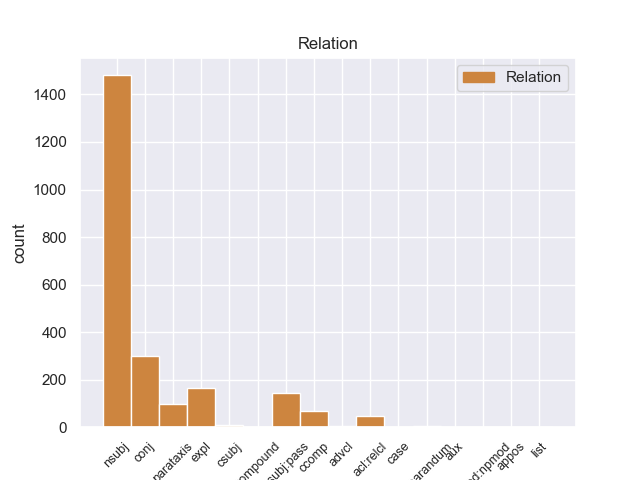
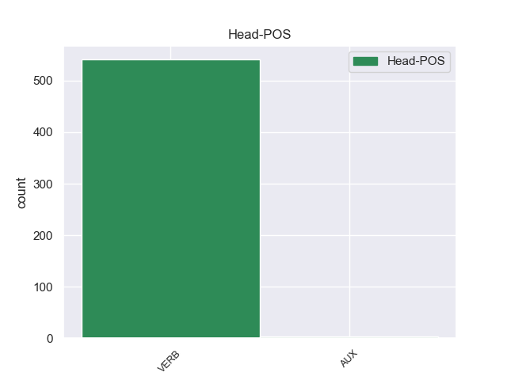
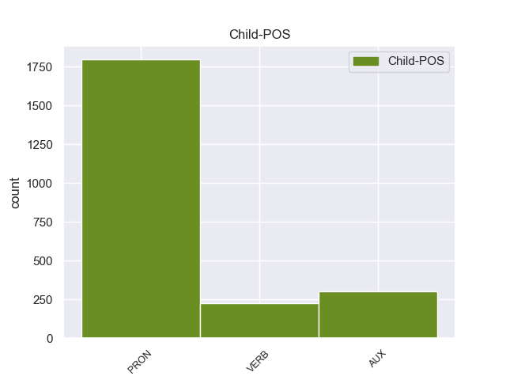

Distribution of features within this leaf



Agreement Rules sorted by frequency.
- When the dependent token is the nominal subject(nsubj) of the head token, and the head token is AUX
1 However _ _ _ _ 0 _ _ _
2 , _ _ _ _ 0 _ _ _
3 when _ _ _ _ 0 _ _ _
4 he _ _ _ _ 0 _ _ _
5 printed _ _ _ _ 0 _ _ _
6 out _ _ _ _ 0 _ _ _
7 the _ _ _ _ 0 _ _ _
8 service _ _ _ _ 0 _ _ _
9 quote _ _ _ _ 0 _ _ _
10 , _ _ _ _ 0 _ _ _
11 I _ _ _ _ 0 _ _ _
12 could _ _ _ _ 0 _ _ _
13 see _ _ _ _ 0 _ _ _
14 that _ _ _ _ 0 _ _ _
15 it it PRON PRP Case=Nom|Gender=Neut|Number=Sing|Person=3|PronType=Prs 16 nsubj 20:nsubj|28:nsubj _
16 was be AUX VBD Mood=Ind|Number=Sing|Person=3|Tense=Past|VerbForm=Fin 0 _ _ _
17 NOT _ _ _ _ 0 _ _ _
18 the _ _ _ _ 0 _ _ _
19 correct _ _ _ _ 0 _ _ _
20 tire _ _ _ _ 0 _ _ _
21 , _ _ _ _ 0 _ _ _
22 and _ _ _ _ 0 _ _ _
23 was _ _ _ _ 0 _ _ _
24 not _ _ _ _ 0 _ _ _
25 even _ _ _ _ 0 _ _ _
26 an _ _ _ _ 0 _ _ _
27 appropriate _ _ _ _ 0 _ _ _
28 tire _ _ _ _ 0 _ _ _
29 for _ _ _ _ 0 _ _ _
30 my _ _ _ _ 0 _ _ _
31 car _ _ _ _ 0 _ _ _
32 model _ _ _ _ 0 _ _ _
33 . _ _ _ _ 0 _ _ _
1 Unless _ _ _ _ 0 _ _ _
2 you _ _ _ _ 0 _ _ _
3 want _ _ _ _ 0 _ _ _
4 to _ _ _ _ 0 _ _ _
5 take _ _ _ _ 0 _ _ _
6 the _ _ _ _ 0 _ _ _
7 " _ _ _ _ 0 _ _ _
8 tell _ _ _ _ 0 _ _ _
9 the _ _ _ _ 0 _ _ _
10 customer _ _ _ _ 0 _ _ _
11 how _ _ _ _ 0 _ _ _
12 wrong _ _ _ _ 0 _ _ _
13 she she PRON PRP Case=Nom|Gender=Fem|Number=Sing|Person=3|PronType=Prs 14 nsubj 14:nsubj _
14 is be VERB VBZ Mood=Ind|Number=Sing|Person=3|Tense=Pres|VerbForm=Fin 0 _ _ _
15 and _ _ _ _ 0 _ _ _
16 try _ _ _ _ 0 _ _ _
17 and _ _ _ _ 0 _ _ _
18 force _ _ _ _ 0 _ _ _
19 her _ _ _ _ 0 _ _ _
20 into _ _ _ _ 0 _ _ _
21 a _ _ _ _ 0 _ _ _
22 dress _ _ _ _ 0 _ _ _
23 she _ _ _ _ 0 _ _ _
24 's _ _ _ _ 0 _ _ _
25 obviously _ _ _ _ 0 _ _ _
26 not _ _ _ _ 0 _ _ _
27 loving _ _ _ _ 0 _ _ _
28 " _ _ _ _ 0 _ _ _
29 approach _ _ _ _ 0 _ _ _
30 which _ _ _ _ 0 _ _ _
31 will _ _ _ _ 0 _ _ _
32 likely _ _ _ _ 0 _ _ _
33 get _ _ _ _ 0 _ _ _
34 you _ _ _ _ 0 _ _ _
35 ... _ _ _ _ 0 _ _ _
36 uh _ _ _ _ 0 _ _ _
37 ... _ _ _ _ 0 _ _ _
38 nowhere _ _ _ _ 0 _ _ _
39 . _ _ _ _ 0 _ _ _
1 However _ _ _ _ 0 _ _ _
2 , _ _ _ _ 0 _ _ _
3 when _ _ _ _ 0 _ _ _
4 he _ _ _ _ 0 _ _ _
5 printed _ _ _ _ 0 _ _ _
6 out _ _ _ _ 0 _ _ _
7 the _ _ _ _ 0 _ _ _
8 service _ _ _ _ 0 _ _ _
9 quote _ _ _ _ 0 _ _ _
10 , _ _ _ _ 0 _ _ _
11 I _ _ _ _ 0 _ _ _
12 could _ _ _ _ 0 _ _ _
13 see _ _ _ _ 0 _ _ _
14 that _ _ _ _ 0 _ _ _
15 it _ _ _ _ 0 _ _ _
16 was be AUX VBD Mood=Ind|Number=Sing|Person=3|Tense=Past|VerbForm=Fin 0 _ _ _
17 NOT _ _ _ _ 0 _ _ _
18 the _ _ _ _ 0 _ _ _
19 correct _ _ _ _ 0 _ _ _
20 tire _ _ _ _ 0 _ _ _
21 , _ _ _ _ 0 _ _ _
22 and _ _ _ _ 0 _ _ _
23 was be AUX VBD Mood=Ind|Number=Sing|Person=3|Tense=Past|VerbForm=Fin 16 conj 28:cop _
24 not _ _ _ _ 0 _ _ _
25 even _ _ _ _ 0 _ _ _
26 an _ _ _ _ 0 _ _ _
27 appropriate _ _ _ _ 0 _ _ _
28 tire _ _ _ _ 0 _ _ _
29 for _ _ _ _ 0 _ _ _
30 my _ _ _ _ 0 _ _ _
31 car _ _ _ _ 0 _ _ _
32 model _ _ _ _ 0 _ _ _
33 . _ _ _ _ 0 _ _ _
1 On _ _ _ _ 0 _ _ _
2 Monday _ _ _ _ 0 _ _ _
3 I _ _ _ _ 0 _ _ _
4 called _ _ _ _ 0 _ _ _
5 and _ _ _ _ 0 _ _ _
6 again _ _ _ _ 0 _ _ _
7 it it PRON PRP Case=Nom|Gender=Neut|Number=Sing|Person=3|PronType=Prs 8 expl 13:expl _
8 was be AUX VBD Mood=Ind|Number=Sing|Person=3|Tense=Past|VerbForm=Fin 0 _ _ _
9 a _ _ _ _ 0 _ _ _
10 big _ _ _ _ 0 _ _ _
11 to _ _ _ _ 0 _ _ _
12 - _ _ _ _ 0 _ _ _
13 do _ _ _ _ 0 _ _ _
14 to _ _ _ _ 0 _ _ _
15 find _ _ _ _ 0 _ _ _
16 anyone _ _ _ _ 0 _ _ _
17 who _ _ _ _ 0 _ _ _
18 knew _ _ _ _ 0 _ _ _
19 anything _ _ _ _ 0 _ _ _
20 about _ _ _ _ 0 _ _ _
21 it _ _ _ _ 0 _ _ _
22 . _ _ _ _ 0 _ _ _
1 A _ _ _ _ 0 _ _ _
2 few _ _ _ _ 0 _ _ _
3 minutes _ _ _ _ 0 _ _ _
4 after _ _ _ _ 0 _ _ _
5 I _ _ _ _ 0 _ _ _
6 left _ _ _ _ 0 _ _ _
7 , _ _ _ _ 0 _ _ _
8 I I PRON PRP Case=Nom|Number=Sing|Person=1|PronType=Prs 9 nsubj:pass 10:nsubj:pass|12:nsubj:pass _
9 was be AUX VBD Mood=Ind|Number=Sing|Person=1|Tense=Past|VerbForm=Fin 0 _ _ _
10 called _ _ _ _ 0 _ _ _
11 and _ _ _ _ 0 _ _ _
12 informed _ _ _ _ 0 _ _ _
13 that _ _ _ _ 0 _ _ _
14 " _ _ _ _ 0 _ _ _
15 I _ _ _ _ 0 _ _ _
16 " _ _ _ _ 0 _ _ _
17 left _ _ _ _ 0 _ _ _
18 my _ _ _ _ 0 _ _ _
19 wheel _ _ _ _ 0 _ _ _
20 lock _ _ _ _ 0 _ _ _
21 ( _ _ _ _ 0 _ _ _
22 which _ _ _ _ 0 _ _ _
23 they _ _ _ _ 0 _ _ _
24 should _ _ _ _ 0 _ _ _
25 have _ _ _ _ 0 _ _ _
26 left _ _ _ _ 0 _ _ _
27 in _ _ _ _ 0 _ _ _
28 the _ _ _ _ 0 _ _ _
29 car _ _ _ _ 0 _ _ _
30 ) _ _ _ _ 0 _ _ _
31 . _ _ _ _ 0 _ _ _
1 If _ _ _ _ 0 _ _ _
2 you _ _ _ _ 0 _ _ _
3 want _ _ _ _ 0 _ _ _
4 a _ _ _ _ 0 _ _ _
5 doctor _ _ _ _ 0 _ _ _
6 who _ _ _ _ 0 _ _ _
7 will _ _ _ _ 0 _ _ _
8 lie _ _ _ _ 0 _ _ _
9 to _ _ _ _ 0 _ _ _
10 you _ _ _ _ 0 _ _ _
11 and _ _ _ _ 0 _ _ _
12 say _ _ _ _ 0 _ _ _
13 he _ _ _ _ 0 _ _ _
14 will _ _ _ _ 0 _ _ _
15 operate _ _ _ _ 0 _ _ _
16 and _ _ _ _ 0 _ _ _
17 then _ _ _ _ 0 _ _ _
18 change _ _ _ _ 0 _ _ _
19 his _ _ _ _ 0 _ _ _
20 mind _ _ _ _ 0 _ _ _
21 , _ _ _ _ 0 _ _ _
22 and _ _ _ _ 0 _ _ _
23 not _ _ _ _ 0 _ _ _
24 know _ _ _ _ 0 _ _ _
25 what _ _ _ _ 0 _ _ _
26 he _ _ _ _ 0 _ _ _
27 is _ _ _ _ 0 _ _ _
28 talking _ _ _ _ 0 _ _ _
29 about _ _ _ _ 0 _ _ _
30 when _ _ _ _ 0 _ _ _
31 he _ _ _ _ 0 _ _ _
32 recommends recommend VERB VBZ Mood=Ind|Number=Sing|Person=3|Tense=Pres|VerbForm=Fin 0 _ _ _
33 procedures _ _ _ _ 0 _ _ _
34 at _ _ _ _ 0 _ _ _
35 other _ _ _ _ 0 _ _ _
36 hospitals _ _ _ _ 0 _ _ _
37 and _ _ _ _ 0 _ _ _
38 says say VERB VBZ Mood=Ind|Number=Sing|Person=3|Tense=Pres|VerbForm=Fin 32 conj 28:advcl:when|32:conj:and _
39 they _ _ _ _ 0 _ _ _
40 are _ _ _ _ 0 _ _ _
41 what _ _ _ _ 0 _ _ _
42 you _ _ _ _ 0 _ _ _
43 need _ _ _ _ 0 _ _ _
44 , _ _ _ _ 0 _ _ _
45 when _ _ _ _ 0 _ _ _
46 they _ _ _ _ 0 _ _ _
47 will _ _ _ _ 0 _ _ _
48 not _ _ _ _ 0 _ _ _
49 work _ _ _ _ 0 _ _ _
50 for _ _ _ _ 0 _ _ _
51 you _ _ _ _ 0 _ _ _
52 , _ _ _ _ 0 _ _ _
53 go _ _ _ _ 0 _ _ _
54 to _ _ _ _ 0 _ _ _
55 this _ _ _ _ 0 _ _ _
56 doctor _ _ _ _ 0 _ _ _
57 ... _ _ _ _ 0 _ _ _
58 he _ _ _ _ 0 _ _ _
59 is _ _ _ _ 0 _ _ _
60 the _ _ _ _ 0 _ _ _
61 one _ _ _ _ 0 _ _ _
62 for _ _ _ _ 0 _ _ _
63 you _ _ _ _ 0 _ _ _
64 . _ _ _ _ 0 _ _ _
1 and _ _ _ _ 0 _ _ _
2 I _ _ _ _ 0 _ _ _
3 said _ _ _ _ 0 _ _ _
4 , _ _ _ _ 0 _ _ _
5 YES _ _ _ _ 0 _ _ _
6 , _ _ _ _ 0 _ _ _
7 CENTER _ _ _ _ 0 _ _ _
8 CITY _ _ _ _ 0 _ _ _
9 PHILLY _ _ _ _ 0 _ _ _
10 , _ _ _ _ 0 _ _ _
11 and _ _ _ _ 0 _ _ _
12 he _ _ _ _ 0 _ _ _
13 says _ _ _ _ 0 _ _ _
14 , _ _ _ _ 0 _ _ _
15 NO _ _ _ _ 0 _ _ _
16 , _ _ _ _ 0 _ _ _
17 Warwick _ _ _ _ 0 _ _ _
18 is be AUX VBZ Mood=Ind|Number=Sing|Person=3|Tense=Pres|VerbForm=Fin 0 _ _ _
19 a _ _ _ _ 0 _ _ _
20 township _ _ _ _ 0 _ _ _
21 , _ _ _ _ 0 _ _ _
22 If _ _ _ _ 0 _ _ _
23 you _ _ _ _ 0 _ _ _
24 're _ _ _ _ 0 _ _ _
25 at _ _ _ _ 0 _ _ _
26 a _ _ _ _ 0 _ _ _
27 Radison _ _ _ _ 0 _ _ _
28 in _ _ _ _ 0 _ _ _
29 Warwick _ _ _ _ 0 _ _ _
30 that _ _ _ _ 0 _ _ _
31 s be AUX VBZ Mood=Ind|Number=Sing|Person=3|Tense=Pres|VerbForm=Fin 18 parataxis 33:cop _
32 too _ _ _ _ 0 _ _ _
33 far _ _ _ _ 0 _ _ _
34 , _ _ _ _ 0 _ _ _
35 try _ _ _ _ 0 _ _ _
36 dominos _ _ _ _ 0 _ _ _
37 in _ _ _ _ 0 _ _ _
38 Pottstown _ _ _ _ 0 _ _ _
39 . _ _ _ _ 0 _ _ _
1 The _ _ _ _ 0 _ _ _
2 truth _ _ _ _ 0 _ _ _
3 is be VERB VBZ Mood=Ind|Number=Sing|Person=3|Tense=Pres|VerbForm=Fin 0 _ _ _
4 , _ _ _ _ 0 _ _ _
5 in _ _ _ _ 0 _ _ _
6 my _ _ _ _ 0 _ _ _
7 and _ _ _ _ 0 _ _ _
8 my _ _ _ _ 0 _ _ _
9 dining _ _ _ _ 0 _ _ _
10 partners _ _ _ _ 0 _ _ _
11 ' _ _ _ _ 0 _ _ _
12 experience _ _ _ _ 0 _ _ _
13 , _ _ _ _ 0 _ _ _
14 this _ _ _ _ 0 _ _ _
15 is be AUX VBZ Mood=Ind|Number=Sing|Person=3|Tense=Pres|VerbForm=Fin 3 ccomp 19:cop _
16 a _ _ _ _ 0 _ _ _
17 fine _ _ _ _ 0 _ _ _
18 little _ _ _ _ 0 _ _ _
19 restaurant _ _ _ _ 0 _ _ _
20 with _ _ _ _ 0 _ _ _
21 some _ _ _ _ 0 _ _ _
22 unique _ _ _ _ 0 _ _ _
23 food _ _ _ _ 0 _ _ _
24 . _ _ _ _ 0 _ _ _
1 With _ _ _ _ 0 _ _ _
2 a _ _ _ _ 0 _ _ _
3 smirk _ _ _ _ 0 _ _ _
4 on _ _ _ _ 0 _ _ _
5 her _ _ _ _ 0 _ _ _
6 face _ _ _ _ 0 _ _ _
7 she _ _ _ _ 0 _ _ _
8 told _ _ _ _ 0 _ _ _
9 me _ _ _ _ 0 _ _ _
10 NO _ _ _ _ 0 _ _ _
11 MONEY _ _ _ _ 0 _ _ _
12 IS _ _ _ _ 0 _ _ _
13 BEING _ _ _ _ 0 _ _ _
14 RETURNED _ _ _ _ 0 _ _ _
15 and _ _ _ _ 0 _ _ _
16 THAT _ _ _ _ 0 _ _ _
17 IS be AUX VBZ Mood=Ind|Number=Sing|Person=3|Tense=Pres|VerbForm=Fin 0 _ _ _
18 THE _ _ _ _ 0 _ _ _
19 WAY _ _ _ _ 0 _ _ _
20 IT _ _ _ _ 0 _ _ _
21 WAS be VERB VBD Mood=Ind|Number=Sing|Person=3|Tense=Past|VerbForm=Fin 17 acl:relcl 19:acl:relcl SpaceAfter=No
22 . _ _ _ _ 0 _ _ _
1 Anyhow _ _ _ _ 0 _ _ _
2 , _ _ _ _ 0 _ _ _
3 after _ _ _ _ 0 _ _ _
4 reading _ _ _ _ 0 _ _ _
5 some _ _ _ _ 0 _ _ _
6 of _ _ _ _ 0 _ _ _
7 the _ _ _ _ 0 _ _ _
8 other _ _ _ _ 0 _ _ _
9 reviews _ _ _ _ 0 _ _ _
10 it it PRON PRP Case=Nom|Gender=Neut|Number=Sing|Person=3|PronType=Prs 11 expl 11:expl _
11 seems seem VERB VBZ Mood=Ind|Number=Sing|Person=3|Tense=Pres|VerbForm=Fin 0 _ _ _
12 like _ _ _ _ 0 _ _ _
13 some _ _ _ _ 0 _ _ _
14 of _ _ _ _ 0 _ _ _
15 the _ _ _ _ 0 _ _ _
16 other _ _ _ _ 0 _ _ _
17 reviewers _ _ _ _ 0 _ _ _
18 are _ _ _ _ 0 _ _ _
19 expecting _ _ _ _ 0 _ _ _
20 mircles _ _ _ _ 0 _ _ _
21 . _ _ _ _ 0 _ _ _
1 Dessert _ _ _ _ 0 _ _ _
2 was be VERB VBD Mood=Ind|Number=Sing|Person=3|Tense=Past|VerbForm=Fin 0 _ _ _
3 ... _ _ _ _ 0 _ _ _
4 hmmm _ _ _ _ 0 _ _ _
5 , _ _ _ _ 0 _ _ _
6 that _ _ _ _ 0 _ _ _
7 's be AUX VBZ Mood=Ind|Number=Sing|Person=3|Tense=Pres|VerbForm=Fin 2 parataxis 8:cop _
8 interesting _ _ _ _ 0 _ _ _
9 , _ _ _ _ 0 _ _ _
10 I _ _ _ _ 0 _ _ _
11 do _ _ _ _ 0 _ _ _
12 n't _ _ _ _ 0 _ _ _
13 even _ _ _ _ 0 _ _ _
14 remember _ _ _ _ 0 _ _ _
15 dessert _ _ _ _ 0 _ _ _
16 . _ _ _ _ 0 _ _ _
1 I _ _ _ _ 0 _ _ _
2 'm _ _ _ _ 0 _ _ _
3 a _ _ _ _ 0 _ _ _
4 soccer _ _ _ _ 0 _ _ _
5 mom _ _ _ _ 0 _ _ _
6 so _ _ _ _ 0 _ _ _
7 I _ _ _ _ 0 _ _ _
8 was be AUX VBD Mood=Ind|Number=Sing|Person=3|Tense=Past|VerbForm=Fin 0 _ _ _
9 n't _ _ _ _ 0 _ _ _
10 sure _ _ _ _ 0 _ _ _
11 what _ _ _ _ 0 _ _ _
12 I _ _ _ _ 0 _ _ _
13 was be AUX VBD Mood=Ind|Number=Sing|Person=3|Tense=Past|VerbForm=Fin 8 ccomp 14:aux _
14 looking _ _ _ _ 0 _ _ _
15 for _ _ _ _ 0 _ _ _
16 when _ _ _ _ 0 _ _ _
17 it _ _ _ _ 0 _ _ _
18 comes _ _ _ _ 0 _ _ _
19 to _ _ _ _ 0 _ _ _
20 dancewear _ _ _ _ 0 _ _ _
21 . _ _ _ _ 0 _ _ _
1 Upon _ _ _ _ 0 _ _ _
2 delivery _ _ _ _ 0 _ _ _
3 it _ _ _ _ 0 _ _ _
4 was be AUX VBD Mood=Ind|Number=Sing|Person=3|Tense=Past|VerbForm=Fin 0 _ _ _
5 clear _ _ _ _ 0 _ _ _
6 the _ _ _ _ 0 _ _ _
7 entire _ _ _ _ 0 _ _ _
8 set _ _ _ _ 0 _ _ _
9 was be AUX VBD Mood=Ind|Number=Sing|Person=3|Tense=Past|VerbForm=Fin 4 csubj 10:aux:pass _
10 damaged _ _ _ _ 0 _ _ _
11 : _ _ _ _ 0 _ _ _
12 a _ _ _ _ 0 _ _ _
13 piece _ _ _ _ 0 _ _ _
14 of _ _ _ _ 0 _ _ _
15 wood _ _ _ _ 0 _ _ _
16 was _ _ _ _ 0 _ _ _
17 broke _ _ _ _ 0 _ _ _
18 on _ _ _ _ 0 _ _ _
19 the _ _ _ _ 0 _ _ _
20 headboard _ _ _ _ 0 _ _ _
21 ; _ _ _ _ 0 _ _ _
22 the _ _ _ _ 0 _ _ _
23 chest _ _ _ _ 0 _ _ _
24 of _ _ _ _ 0 _ _ _
25 drawers _ _ _ _ 0 _ _ _
26 was _ _ _ _ 0 _ _ _
27 missing _ _ _ _ 0 _ _ _
28 all _ _ _ _ 0 _ _ _
29 four _ _ _ _ 0 _ _ _
30 pieces _ _ _ _ 0 _ _ _
31 necessary _ _ _ _ 0 _ _ _
32 to _ _ _ _ 0 _ _ _
33 attach _ _ _ _ 0 _ _ _
34 the _ _ _ _ 0 _ _ _
35 legs _ _ _ _ 0 _ _ _
36 ; _ _ _ _ 0 _ _ _
37 the _ _ _ _ 0 _ _ _
38 dresser _ _ _ _ 0 _ _ _
39 back _ _ _ _ 0 _ _ _
40 legs _ _ _ _ 0 _ _ _
41 were _ _ _ _ 0 _ _ _
42 pushed _ _ _ _ 0 _ _ _
43 in _ _ _ _ 0 _ _ _
44 causing _ _ _ _ 0 _ _ _
45 the _ _ _ _ 0 _ _ _
46 dresser _ _ _ _ 0 _ _ _
47 to _ _ _ _ 0 _ _ _
48 lean _ _ _ _ 0 _ _ _
49 into _ _ _ _ 0 _ _ _
50 the _ _ _ _ 0 _ _ _
51 wall _ _ _ _ 0 _ _ _
52 ; _ _ _ _ 0 _ _ _
53 and _ _ _ _ 0 _ _ _
54 a _ _ _ _ 0 _ _ _
55 nighstand _ _ _ _ 0 _ _ _
56 was _ _ _ _ 0 _ _ _
57 missing _ _ _ _ 0 _ _ _
58 a _ _ _ _ 0 _ _ _
59 drawer _ _ _ _ 0 _ _ _
60 . _ _ _ _ 0 _ _ _
1 I _ _ _ _ 0 _ _ _
2 received _ _ _ _ 0 _ _ _
3 a _ _ _ _ 0 _ _ _
4 report _ _ _ _ 0 _ _ _
5 from _ _ _ _ 0 _ _ _
6 HR _ _ _ _ 0 _ _ _
7 and _ _ _ _ 0 _ _ _
8 it _ _ _ _ 0 _ _ _
9 appears appear VERB VBZ Mood=Ind|Number=Sing|Person=3|Tense=Pres|VerbForm=Fin 0 _ _ _
10 there _ _ _ _ 0 _ _ _
11 is be VERB VBZ Mood=Ind|Number=Sing|Person=3|Tense=Pres|VerbForm=Fin 9 csubj 9:csubj _
12 conflicting _ _ _ _ 0 _ _ _
13 information _ _ _ _ 0 _ _ _
14 regarding _ _ _ _ 0 _ _ _
15 some _ _ _ _ 0 _ _ _
16 of _ _ _ _ 0 _ _ _
17 the _ _ _ _ 0 _ _ _
18 titles _ _ _ _ 0 _ _ _
19 for _ _ _ _ 0 _ _ _
20 various _ _ _ _ 0 _ _ _
21 employees _ _ _ _ 0 _ _ _
22 . _ _ _ _ 0 _ _ _
1 not _ _ _ _ 0 _ _ _
2 only _ _ _ _ 0 _ _ _
3 is be AUX VBZ Mood=Ind|Number=Sing|Person=3|Tense=Pres|VerbForm=Fin 14 advcl 7:cop _
4 this _ _ _ _ 0 _ _ _
5 place _ _ _ _ 0 _ _ _
6 too _ _ _ _ 0 _ _ _
7 expensive _ _ _ _ 0 _ _ _
8 for _ _ _ _ 0 _ _ _
9 what _ _ _ _ 0 _ _ _
10 it _ _ _ _ 0 _ _ _
11 is _ _ _ _ 0 _ _ _
12 , _ _ _ _ 0 _ _ _
13 it _ _ _ _ 0 _ _ _
14 s be AUX VBZ Mood=Ind|Number=Sing|Person=3|Tense=Pres|VerbForm=Fin 0 _ _ _
15 horrible _ _ _ _ 0 _ _ _
16 ! _ _ _ _ 0 _ _ _
1 Any _ _ _ _ 0 _ _ _
2 government _ _ _ _ 0 _ _ _
3 that _ _ _ _ 0 _ _ _
4 assumes assume VERB VBZ Mood=Ind|Number=Sing|Person=3|Tense=Pres|VerbForm=Fin 0 _ _ _
5 power _ _ _ _ 0 _ _ _
6 after _ _ _ _ 0 _ _ _
7 the _ _ _ _ 0 _ _ _
8 elections _ _ _ _ 0 _ _ _
9 also _ _ _ _ 0 _ _ _
10 realises _ _ _ _ 0 _ _ _
11 this _ _ _ _ 0 _ _ _
12 , _ _ _ _ 0 _ _ _
13 so _ _ _ _ 0 _ _ _
14 not _ _ _ _ 0 _ _ _
15 even _ _ _ _ 0 _ _ _
16 Sistani _ _ _ _ 0 _ _ _
17 is be AUX VBZ Mood=Ind|Number=Sing|Person=3|Tense=Pres|VerbForm=Fin 4 advcl 18:aux _
18 going _ _ _ _ 0 _ _ _
19 to _ _ _ _ 0 _ _ _
20 call _ _ _ _ 0 _ _ _
21 the _ _ _ _ 0 _ _ _
22 US _ _ _ _ 0 _ _ _
23 to _ _ _ _ 0 _ _ _
24 withdraw _ _ _ _ 0 _ _ _
25 its _ _ _ _ 0 _ _ _
26 troops _ _ _ _ 0 _ _ _
27 , _ _ _ _ 0 _ _ _
28 despite _ _ _ _ 0 _ _ _
29 what _ _ _ _ 0 _ _ _
30 he _ _ _ _ 0 _ _ _
31 is _ _ _ _ 0 _ _ _
32 saying _ _ _ _ 0 _ _ _
33 now _ _ _ _ 0 _ _ _
34 , _ _ _ _ 0 _ _ _
35 not _ _ _ _ 0 _ _ _
36 until _ _ _ _ 0 _ _ _
37 they _ _ _ _ 0 _ _ _
38 are _ _ _ _ 0 _ _ _
39 ensured _ _ _ _ 0 _ _ _
40 the _ _ _ _ 0 _ _ _
41 insurgency _ _ _ _ 0 _ _ _
42 is _ _ _ _ 0 _ _ _
43 out _ _ _ _ 0 _ _ _
44 of _ _ _ _ 0 _ _ _
45 the _ _ _ _ 0 _ _ _
46 picture _ _ _ _ 0 _ _ _
47 , _ _ _ _ 0 _ _ _
48 or _ _ _ _ 0 _ _ _
49 that _ _ _ _ 0 _ _ _
50 they _ _ _ _ 0 _ _ _
51 have _ _ _ _ 0 _ _ _
52 an _ _ _ _ 0 _ _ _
53 alternative _ _ _ _ 0 _ _ _
54 foreign _ _ _ _ 0 _ _ _
55 power _ _ _ _ 0 _ _ _
56 ( _ _ _ _ 0 _ _ _
57 in _ _ _ _ 0 _ _ _
58 this _ _ _ _ 0 _ _ _
59 case _ _ _ _ 0 _ _ _
60 Iran _ _ _ _ 0 _ _ _
61 ) _ _ _ _ 0 _ _ _
62 to _ _ _ _ 0 _ _ _
63 back _ _ _ _ 0 _ _ _
64 them _ _ _ _ 0 _ _ _
65 up _ _ _ _ 0 _ _ _
66 . _ _ _ _ 0 _ _ _
1 There _ _ _ _ 0 _ _ _
2 is _ _ _ _ 0 _ _ _
3 a _ _ _ _ 0 _ _ _
4 corporate _ _ _ _ 0 _ _ _
5 data _ _ _ _ 0 _ _ _
6 sheet _ _ _ _ 0 _ _ _
7 for _ _ _ _ 0 _ _ _
8 this _ _ _ _ 0 _ _ _
9 company _ _ _ _ 0 _ _ _
10 , _ _ _ _ 0 _ _ _
11 but _ _ _ _ 0 _ _ _
12 this _ _ _ _ 0 _ _ _
13 entity _ _ _ _ 0 _ _ _
14 seems _ _ _ _ 0 _ _ _
15 to _ _ _ _ 0 _ _ _
16 have _ _ _ _ 0 _ _ _
17 been _ _ _ _ 0 _ _ _
18 inactive _ _ _ _ 0 _ _ _
19 since _ _ _ _ 0 _ _ _
20 it it PRON PRP Case=Nom|Gender=Neut|Number=Sing|Person=3|PronType=Prs 21 case 22:nmod:poss SpaceAfter=No
21 's be VERB VBZ Mood=Ind|Number=Sing|Person=3|Tense=Pres|VerbForm=Fin 0 _ _ _
22 creation _ _ _ _ 0 _ _ _
23 . _ _ _ _ 0 _ _ _
1 it it PRON PRP Case=Nom|Gender=Neut|Number=Sing|Person=3|PronType=Prs 2 reparandum 2:reparandum SpaceAfter=No
2 's be VERB VBZ Mood=Ind|Number=Sing|Person=3|Tense=Pres|VerbForm=Fin 0 _ _ _
3 did _ _ _ _ 0 _ _ _
4 you _ _ _ _ 0 _ _ _
5 watch _ _ _ _ 0 _ _ _
6 your _ _ _ _ 0 _ _ _
7 girl _ _ _ _ 0 _ _ _
8 on _ _ _ _ 0 _ _ _
9 tv _ _ _ _ 0 _ _ _
10 last _ _ _ _ 0 _ _ _
11 night _ _ _ _ 0 _ _ _
12 ? _ _ _ _ 0 _ _ _
1 Sandi _ _ _ _ 0 _ _ _
2 sez _ _ _ _ 0 _ _ _
3 it _ _ _ _ 0 _ _ _
4 's _ _ _ _ 0 _ _ _
5 actually _ _ _ _ 0 _ _ _
6 happening _ _ _ _ 0 _ _ _
7 at _ _ _ _ 0 _ _ _
8 10 _ _ _ _ 0 _ _ _
9 AM _ _ _ _ 0 _ _ _
10 and _ _ _ _ 0 _ _ _
11 it it PRON PRP Case=Nom|Gender=Neut|Number=Sing|Person=3|PronType=Prs 12 nsubj:pass 15:nsubj:pass SpaceAfter=No
12 's be VERB VBZ Mood=Ind|Number=Sing|Person=3|Tense=Pres|VerbForm=Fin 0 _ _ _
13 renewable _ _ _ _ 0 _ _ _
14 - _ _ _ _ 0 _ _ _
15 focused _ _ _ _ 0 _ _ _
16 . _ _ _ _ 0 _ _ _
1 hi _ _ _ _ 0 _ _ _
2 everyone _ _ _ _ 0 _ _ _
3 .... _ _ _ _ 0 _ _ _
4 just _ _ _ _ 0 _ _ _
5 hav _ _ _ _ 0 _ _ _
6 my _ _ _ _ 0 _ _ _
7 hands _ _ _ _ 0 _ _ _
8 on _ _ _ _ 0 _ _ _
9 my _ _ _ _ 0 _ _ _
10 new _ _ _ _ 0 _ _ _
11 OLYMPUS _ _ _ _ 0 _ _ _
12 X940 _ _ _ _ 0 _ _ _
13 digital _ _ _ _ 0 _ _ _
14 camera _ _ _ _ 0 _ _ _
15 .. _ _ _ _ 0 _ _ _
16 wel _ _ _ _ 0 _ _ _
17 , _ _ _ _ 0 _ _ _
18 i _ _ _ _ 0 _ _ _
19 always _ _ _ _ 0 _ _ _
20 wanted _ _ _ _ 0 _ _ _
21 2 _ _ _ _ 0 _ _ _
22 hav _ _ _ _ 0 _ _ _
23 one _ _ _ _ 0 _ _ _
24 by _ _ _ _ 0 _ _ _
25 sony _ _ _ _ 0 _ _ _
26 .. _ _ _ _ 0 _ _ _
27 but _ _ _ _ 0 _ _ _
28 anyways _ _ _ _ 0 _ _ _
29 , _ _ _ _ 0 _ _ _
30 ended _ _ _ _ 0 _ _ _
31 up _ _ _ _ 0 _ _ _
32 having _ _ _ _ 0 _ _ _
33 olympus _ _ _ _ 0 _ _ _
34 X940 _ _ _ _ 0 _ _ _
35 from _ _ _ _ 0 _ _ _
36 my _ _ _ _ 0 _ _ _
37 dad _ _ _ _ 0 _ _ _
38 ....... _ _ _ _ 0 _ _ _
39 does do AUX VBZ Mood=Ind|Number=Sing|Person=3|Tense=Pres|VerbForm=Fin 0 _ _ _
40 any1 _ _ _ _ 0 _ _ _
41 already _ _ _ _ 0 _ _ _
42 has have VERB VBZ Mood=Ind|Number=Sing|Person=3|Tense=Pres|VerbForm=Fin 39 aux 5:parataxis _
43 it _ _ _ _ 0 _ _ _
44 ? _ _ _ _ 0 _ _ _
1 It _ _ _ _ 0 _ _ _
2 is be AUX VBZ Mood=Ind|Number=Sing|Person=3|Tense=Pres|VerbForm=Fin 0 _ _ _
3 like _ _ _ _ 0 _ _ _
4 a _ _ _ _ 0 _ _ _
5 mini _ _ _ _ 0 _ _ _
6 tablet _ _ _ _ 0 _ _ _
7 itself itself PRON PRP Gender=Neut|Number=Sing|Person=3|PronType=Prs 2 nmod:npmod 6:nmod:npmod SpaceAfter=No
8 ! _ _ _ _ 0 _ _ _
1 He _ _ _ _ 0 _ _ _
2 is be AUX VBZ Mood=Ind|Number=Sing|Person=3|Tense=Pres|VerbForm=Fin 0 _ _ _
3 my _ _ _ _ 0 _ _ _
4 farrier _ _ _ _ 0 _ _ _
5 ( _ _ _ _ 0 _ _ _
6 shoes shoe VERB VBZ Mood=Ind|Number=Sing|Person=3|Tense=Pres|VerbForm=Fin 2 appos 4:appos _
7 my _ _ _ _ 0 _ _ _
8 horse _ _ _ _ 0 _ _ _
9 s _ _ _ _ 0 _ _ _
10 feet _ _ _ _ 0 _ _ _
11 ) _ _ _ _ 0 _ _ _
12 so _ _ _ _ 0 _ _ _
13 I _ _ _ _ 0 _ _ _
14 am _ _ _ _ 0 _ _ _
15 technically _ _ _ _ 0 _ _ _
16 a _ _ _ _ 0 _ _ _
17 client _ _ _ _ 0 _ _ _
18 if _ _ _ _ 0 _ _ _
19 you _ _ _ _ 0 _ _ _
20 want _ _ _ _ 0 _ _ _
21 to _ _ _ _ 0 _ _ _
22 view _ _ _ _ 0 _ _ _
23 it _ _ _ _ 0 _ _ _
24 that _ _ _ _ 0 _ _ _
25 way _ _ _ _ 0 _ _ _
26 . _ _ _ _ 0 _ _ _
1 Also _ _ _ _ 0 _ _ _
2 , _ _ _ _ 0 _ _ _
3 he _ _ _ _ 0 _ _ _
4 loves love VERB VBZ Mood=Ind|Number=Sing|Person=3|Tense=Pres|VerbForm=Fin 0 _ _ _
5 teaching _ _ _ _ 0 _ _ _
6 so _ _ _ _ 0 _ _ _
7 much _ _ _ _ 0 _ _ _
8 , _ _ _ _ 0 _ _ _
9 his _ _ _ _ 0 _ _ _
10 price _ _ _ _ 0 _ _ _
11 is be AUX VBZ Mood=Ind|Number=Sing|Person=3|Tense=Pres|VerbForm=Fin 4 list 12:cop _
12 unbeatable _ _ _ _ 0 _ _ _
13 , _ _ _ _ 0 _ _ _
14 but _ _ _ _ 0 _ _ _
15 that _ _ _ _ 0 _ _ _
16 does _ _ _ _ 0 _ _ _
17 not _ _ _ _ 0 _ _ _
18 change _ _ _ _ 0 _ _ _
19 his _ _ _ _ 0 _ _ _
20 level _ _ _ _ 0 _ _ _
21 of _ _ _ _ 0 _ _ _
22 skill _ _ _ _ 0 _ _ _
23 . _ _ _ _ 0 _ _ _
1 The _ _ _ _ 0 _ _ _
2 service _ _ _ _ 0 _ _ _
3 is be AUX VBZ Mood=Ind|Number=Sing|Person=3|Tense=Pres|VerbForm=Fin 0 _ _ _
4 solicitous _ _ _ _ 0 _ _ _
5 , _ _ _ _ 0 _ _ _
6 the _ _ _ _ 0 _ _ _
7 atmosphere _ _ _ _ 0 _ _ _
8 is be AUX VBZ Mood=Ind|Number=Sing|Person=3|Tense=Pres|VerbForm=Fin 3 list 9:cop _
9 nice _ _ _ _ 0 _ _ _
10 and _ _ _ _ 0 _ _ _
11 mod _ _ _ _ 0 _ _ _
12 except _ _ _ _ 0 _ _ _
13 the _ _ _ _ 0 _ _ _
14 out _ _ _ _ 0 _ _ _
15 - _ _ _ _ 0 _ _ _
16 of _ _ _ _ 0 _ _ _
17 - _ _ _ _ 0 _ _ _
18 place _ _ _ _ 0 _ _ _
19 flat _ _ _ _ 0 _ _ _
20 - _ _ _ _ 0 _ _ _
21 screen _ _ _ _ 0 _ _ _
22 TV _ _ _ _ 0 _ _ _
23 playing _ _ _ _ 0 _ _ _
24 football _ _ _ _ 0 _ _ _
25 . _ _ _ _ 0 _ _ _
Disagree Examples:
1 I _ _ _ _ 0 _ _ _
2 guess _ _ _ _ 0 _ _ _
3 it _ _ _ _ 0 _ _ _
4 's be AUX VBZ Mood=Ind|Number=Sing|Person=3|Tense=Pres|VerbForm=Fin 0 _ _ _
5 just _ _ _ _ 0 _ _ _
6 the _ _ _ _ 0 _ _ _
7 old _ _ _ _ 0 _ _ _
8 new _ _ _ _ 0 _ _ _
9 Arab _ _ _ _ 0 _ _ _
10 ' _ _ _ _ 0 _ _ _
11 Me I PRON PRP Case=Acc|Number=Sing|Person=1|PronType=Prs 4 compound 44:compound _
12 against _ _ _ _ 0 _ _ _
13 my _ _ _ _ 0 _ _ _
14 brother _ _ _ _ 0 _ _ _
15 , _ _ _ _ 0 _ _ _
16 me _ _ _ _ 0 _ _ _
17 and _ _ _ _ 0 _ _ _
18 my _ _ _ _ 0 _ _ _
19 brother _ _ _ _ 0 _ _ _
20 against _ _ _ _ 0 _ _ _
21 my _ _ _ _ 0 _ _ _
22 cousin _ _ _ _ 0 _ _ _
23 , _ _ _ _ 0 _ _ _
24 me _ _ _ _ 0 _ _ _
25 and _ _ _ _ 0 _ _ _
26 my _ _ _ _ 0 _ _ _
27 cousin _ _ _ _ 0 _ _ _
28 against _ _ _ _ 0 _ _ _
29 my _ _ _ _ 0 _ _ _
30 enemy _ _ _ _ 0 _ _ _
31 ' _ _ _ _ 0 _ _ _
32 , _ _ _ _ 0 _ _ _
33 or _ _ _ _ 0 _ _ _
34 ' _ _ _ _ 0 _ _ _
35 The _ _ _ _ 0 _ _ _
36 enemy _ _ _ _ 0 _ _ _
37 of _ _ _ _ 0 _ _ _
38 my _ _ _ _ 0 _ _ _
39 enemy _ _ _ _ 0 _ _ _
40 is _ _ _ _ 0 _ _ _
41 my _ _ _ _ 0 _ _ _
42 friend _ _ _ _ 0 _ _ _
43 ' _ _ _ _ 0 _ _ _
44 thing _ _ _ _ 0 _ _ _
45 going _ _ _ _ 0 _ _ _
46 on _ _ _ _ 0 _ _ _
47 again _ _ _ _ 0 _ _ _
48 . _ _ _ _ 0 _ _ _
1 If _ _ _ _ 0 _ _ _
2 I I PRON PRP Case=Nom|Number=Sing|Person=1|PronType=Prs 3 nsubj 4:nsubj _
3 was be AUX VBD Mood=Ind|Number=Sing|Person=3|Tense=Past|VerbForm=Fin 0 _ _ _
4 Rummy _ _ _ _ 0 _ _ _
5 I _ _ _ _ 0 _ _ _
6 'd _ _ _ _ 0 _ _ _
7 send _ _ _ _ 0 _ _ _
8 Posada _ _ _ _ 0 _ _ _
9 to _ _ _ _ 0 _ _ _
10 Iraq _ _ _ _ 0 _ _ _
11 to _ _ _ _ 0 _ _ _
12 blow _ _ _ _ 0 _ _ _
13 things _ _ _ _ 0 _ _ _
14 up _ _ _ _ 0 _ _ _
15 there _ _ _ _ 0 _ _ _
16 . _ _ _ _ 0 _ _ _
1 I I PRON PRP Case=Nom|Number=Sing|Person=1|PronType=Prs 3 nsubj 3:nsubj _
2 mostly _ _ _ _ 0 _ _ _
3 deals deal VERB VBZ Mood=Ind|Number=Sing|Person=3|Tense=Pres|VerbForm=Fin 0 _ _ _
4 with _ _ _ _ 0 _ _ _
5 dating _ _ _ _ 0 _ _ _
6 advice _ _ _ _ 0 _ _ _
1 Mr. _ _ _ _ 0 _ _ _
2 ARCHIBALD _ _ _ _ 0 _ _ _
3 : _ _ _ _ 0 _ _ _
4 I _ _ _ _ 0 _ _ _
5 mean _ _ _ _ 0 _ _ _
6 , _ _ _ _ 0 _ _ _
7 at _ _ _ _ 0 _ _ _
8 that _ _ _ _ 0 _ _ _
9 time _ _ _ _ 0 _ _ _
10 , _ _ _ _ 0 _ _ _
11 I I PRON PRP Case=Nom|Number=Sing|Person=1|PronType=Prs 12 nsubj 13:nsubj _
12 was be AUX VBD Mood=Ind|Number=Sing|Person=3|Tense=Past|VerbForm=Fin 0 _ _ _
13 28 _ _ _ _ 0 _ _ _
14 ; _ _ _ _ 0 _ _ _
15 George _ _ _ _ 0 _ _ _
16 would _ _ _ _ 0 _ _ _
17 have _ _ _ _ 0 _ _ _
18 been _ _ _ _ 0 _ _ _
19 25 _ _ _ _ 0 _ _ _
20 or _ _ _ _ 0 _ _ _
21 26 _ _ _ _ 0 _ _ _
22 . _ _ _ _ 0 _ _ _
1 I I PRON PRP Case=Nom|Number=Sing|Person=1|PronType=Prs 2 nsubj 4:nsubj _
2 was be AUX VBD Mood=Ind|Number=Sing|Person=3|Tense=Past|VerbForm=Fin 0 _ _ _
3 originally _ _ _ _ 0 _ _ _
4 inquiring _ _ _ _ 0 _ _ _
5 about _ _ _ _ 0 _ _ _
6 purchasing _ _ _ _ 0 _ _ _
7 a _ _ _ _ 0 _ _ _
8 Cross _ _ _ _ 0 _ _ _
9 or _ _ _ _ 0 _ _ _
10 Signac _ _ _ _ 0 _ _ _
11 impressionist _ _ _ _ 0 _ _ _
12 lithograph _ _ _ _ 0 _ _ _
13 . _ _ _ _ 0 _ _ _